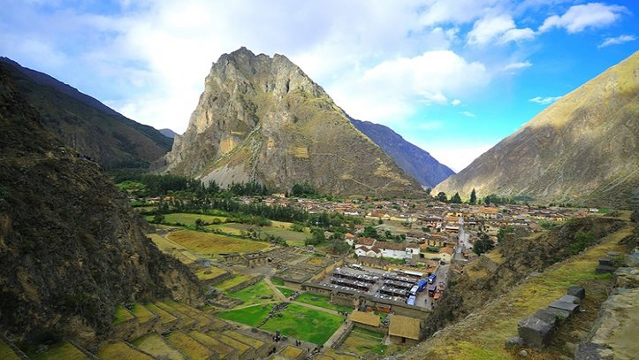
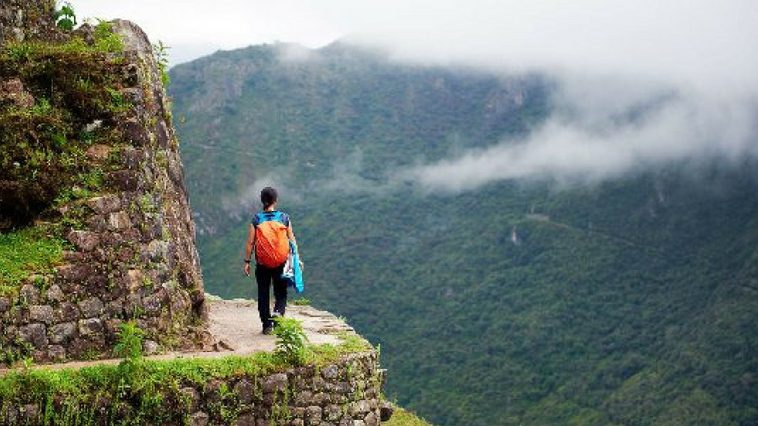
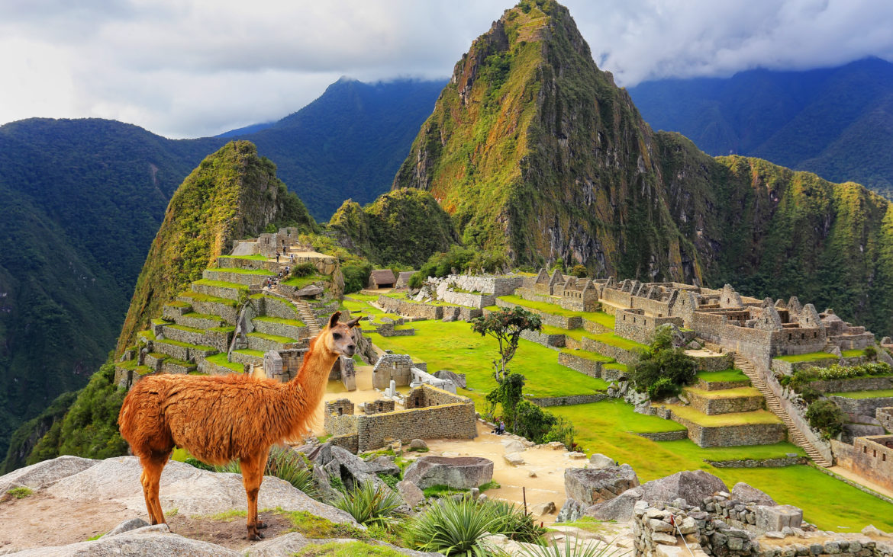

Nesse momento tão especial de nossas vidas queremos realizar mais um sonho que temos: Conhecer o Peru! Este país é repleto de uma cultura rica e de uma natureza exuberante, que nos convida há colocar a mochila nas costas e encarar esta bela aventura Para auxiliarem a gente a realizar esse sonho, voçê pode adquirir uma das cotas de viagem abaixo.

O Vale Sagrado dos Incas, nos Andes peruanos, está composto por numerosos rios que descem por pequenos vales; possui numerosos monumentos arqueológicos e povoados indígenas.
R$30,00

Caminhos Incas é o extenso sistema de caminhos construído durante o Império Inca. Todos os caminhos da América do Sul direcionavam a Cusco, a principal metrópole sul-americana do período pré-colombiano, legado de uma antiga tradição cultural
R$50,00

Machu Picchu, também chamada "cidade perdida dos Incas", é uma cidade pré-colombiana bem conservada, localizada no topo de uma montanha, a 2400 metros de altitude, no vale do rio Urubamba, atual Peru.
R$100,00